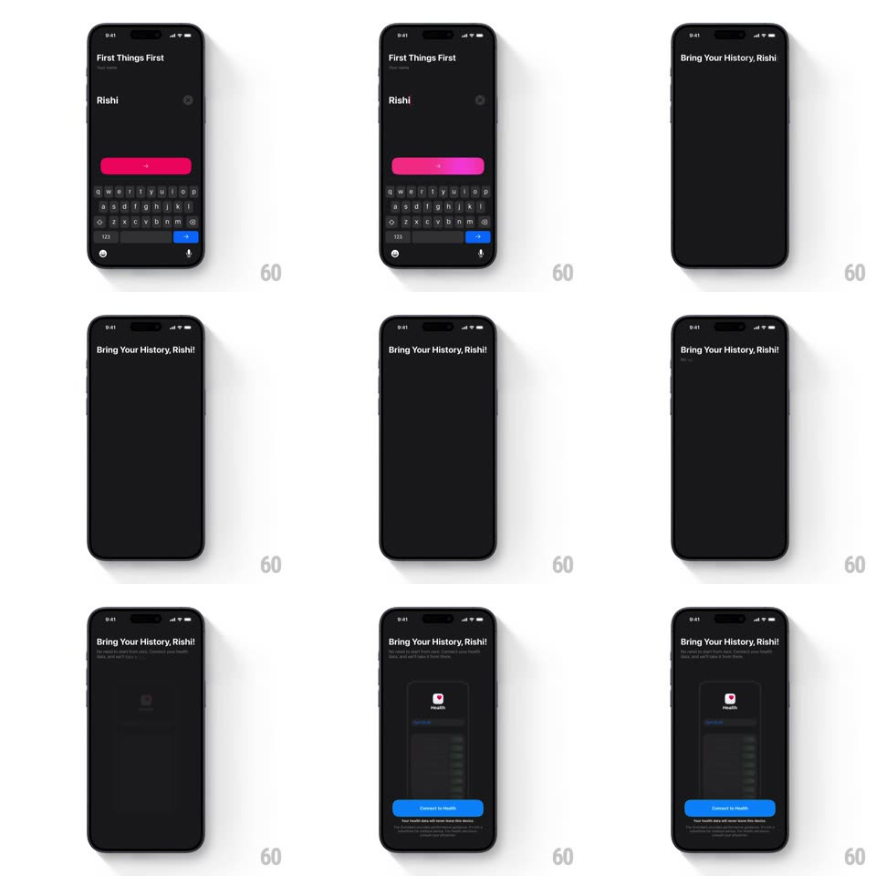

Media
Frame-by-frame

Rebuild this animation 1:1: The Outsiders' name handoff - after typing your name ("Rishi") and tapping the arrow, the entered name flies as a shared element into the next screen's header "Bring Your History, Rishi!", then a Health connect sheet slides up.

Rebuild this animation 1:1: The Outsiders' name handoff - after typing your name ("Rishi") and tapping the arrow, the entered name flies as a shared element into the next screen's header "Bring Your History, Rishi!", then a Health connect sheet slides up.
## Integration
Integration: stack-agnostic spec - springs given as stiffness/damping, timed motions as duration + curve; map every value to your framework and animation library of choice.
## Scene
Dark "First Things First" screen: a "Name" text field, keyboard up, and a pink arrow button. Next: the name appears centered, then settles into the header "Bring Your History, Rishi!" with a subline; a sheet with the Health icon, data rows, and a blue "Connect to Health" button slides up from the bottom.
## Motion spec
Pattern: shared-element text handoff into sheet, ~900ms.
- Tap: the keyboard dismisses (250ms) and the entered name detaches from the field, scaling up and moving to screen center (spring ~340/22, 350ms).
- Settle: the name flies from center into the header line, shrinking to header size and aligning inline after "Bring Your History," (spring, 400ms) as the rest of the header fades in (200ms).
- Subline: fades in +120ms after the header.
- Sheet: the Health sheet slides up from the bottom (spring ~380/28, 400ms) with a dimmed scrim fading to 50% behind it.
## Calibration
- The name is one continuous element through the whole sequence - field, center, header.
- The sheet is modal: the header stays visible but dimmed behind it.
## Reduced motion
The name crossfades into the header (250ms); the sheet fades up (250ms).
## Don't miss
- The brief center-screen hold of the name is the beat that sells the handoff - keep it.
- The typed text in the field must match the header text exactly.